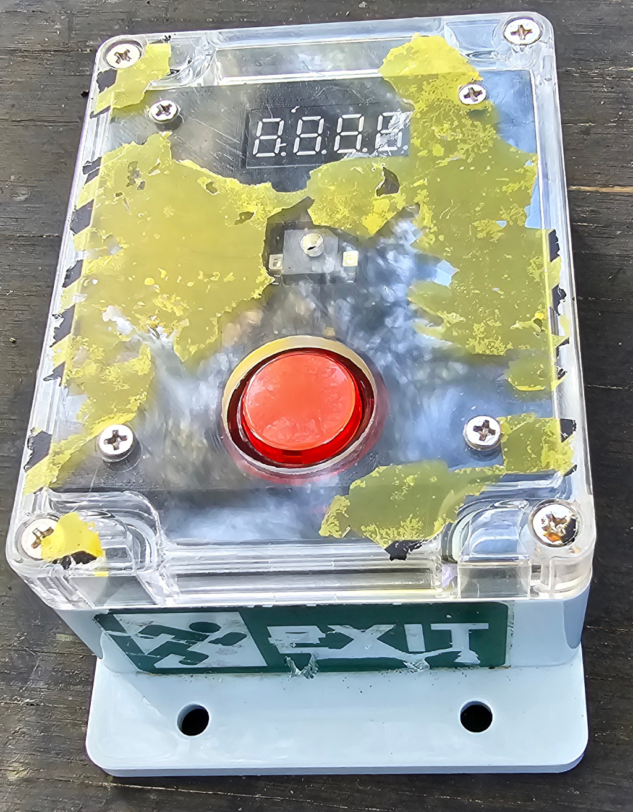
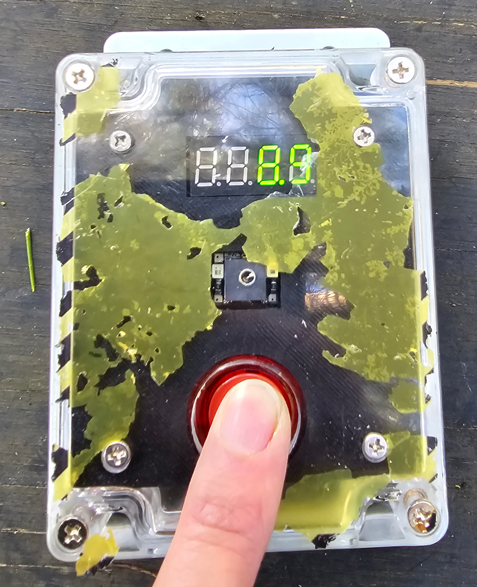

Q-Prop Creations
Respawn Timer
Press the big button and watch the respawn time count down. There's a beep at the end if it is too bright to see the display. Internal switches set the respawn time in ten second increments.
Releasing the button disconnects the battery, so the three AA batteries should last for years of play.


